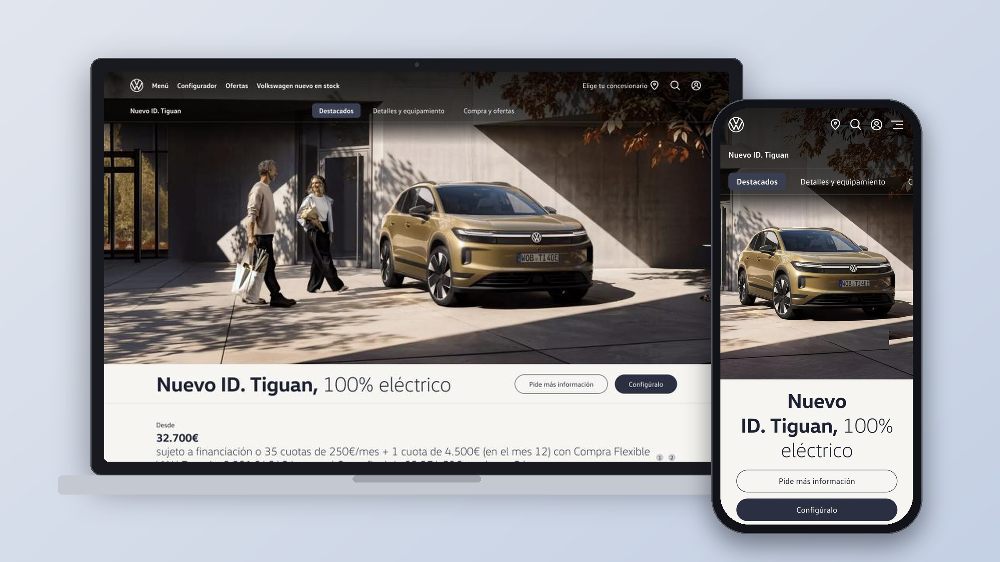
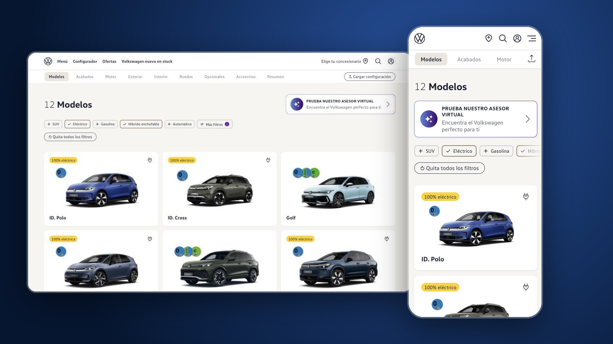

UX/UI · Automotive
Volkswagen
Ongoing UX/UI work on digital experiences and campaigns for Volkswagen — combining interaction design, creative strategy and user-focused thinking to build clear, consistent touchpoints across the customer journey.

Overview
This is active, ongoing work rather than a closed project — I design across landing pages, campaign experiences and CRM-driven journeys for Volkswagen, working the full process from understanding a campaign’s objective and defining the user journey, through to the interface itself. Every piece has to stay clear, relevant, and consistent with the Volkswagen brand while doing its job for the business.
Landing pages


Scope of work
Landing pages
Campaign and product landing experiences aligned to brand guidelines.
Campaign experiences
End-to-end digital moments tied to specific marketing pushes.
CRM-driven journeys
Interfaces and flows built around lifecycle and retention touchpoints.
This is active work, so this page shows the system behind it. Campaign-level results will be added as milestones close.
Impact
- 15+ landing pages
Personally designed and structured 15+ landing pages, each built on the shared system while responding to its campaign objective.
- Design system
A shared foundation of reusable components that keeps campaign and product landing experiences consistent with the Volkswagen brand.